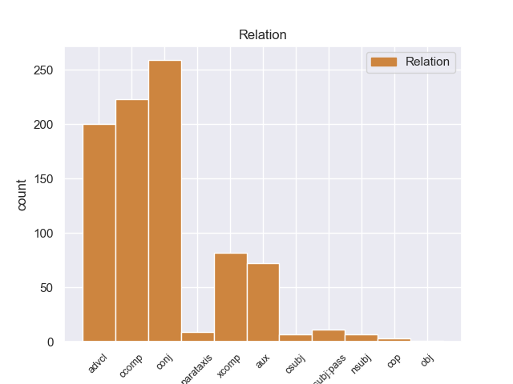
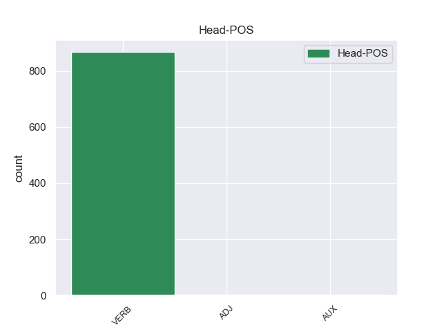
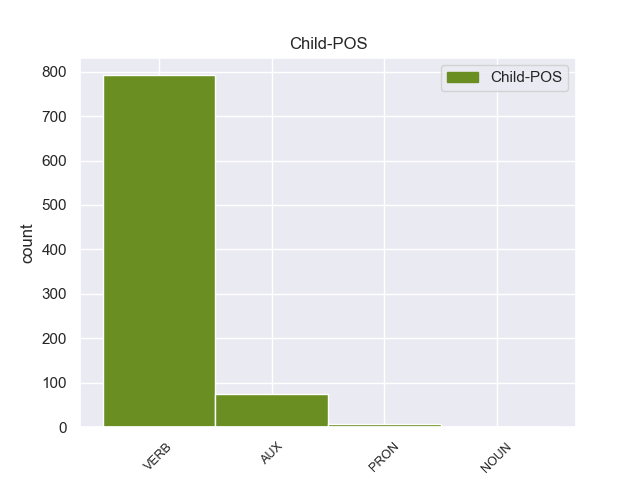

Distribution of features within this leaf



Agreement Rules sorted by frequency.
- When the dependent token is the conjunct(conj) of the head token,
1 Είναι _ _ _ _ 0 _ _ _
2 σημαντικό _ _ _ _ 0 _ _ _
3 να _ _ _ _ 0 _ _ _
4 υπογραμμίσω _ _ _ _ 0 _ _ _
5 το _ _ _ _ 0 _ _ _
6 γεγονός _ _ _ _ 0 _ _ _
7 ότι _ _ _ _ 0 _ _ _
8 και _ _ _ _ 0 _ _ _
9 οι _ _ _ _ 0 _ _ _
10 δύο _ _ _ _ 0 _ _ _
11 βουλευτές _ _ _ _ 0 _ _ _
12 διατρανώνουν διατρανώνώ VERB _ Aspect=Imp|Mood=Ind|Number=Plur|Person=3|Tense=Pres|VerbForm=Fin|Voice=Act 0 _ _ _
13 σθεναρά _ _ _ _ 0 _ _ _
14 την _ _ _ _ 0 _ _ _
15 αθωότητά _ _ _ _ 0 _ _ _
16 τους _ _ _ _ 0 _ _ _
17 και _ _ _ _ 0 _ _ _
18 καταγγέλλουν καταγγέλλω VERB _ Aspect=Imp|Mood=Ind|Number=Plur|Person=3|Tense=Pres|VerbForm=Fin|Voice=Act 12 conj _ _
19 αυτό _ _ _ _ 0 _ _ _
20 που _ _ _ _ 0 _ _ _
21 οι _ _ _ _ 0 _ _ _
22 ίδιοι _ _ _ _ 0 _ _ _
23 θεωρούν _ _ _ _ 0 _ _ _
24 καταχρήσεις _ _ _ _ 0 _ _ _
25 σ _ _ _ _ 0 _ _ _
26 τη _ _ _ _ 0 _ _ _
27 διαδικασία _ _ _ _ 0 _ _ _
28 δίωξης _ _ _ _ 0 _ _ _
29 . _ _ _ _ 0 _ _ _
1 Συνεπώς _ _ _ _ 0 _ _ _
2 , _ _ _ _ 0 _ _ _
3 η _ _ _ _ 0 _ _ _
4 παρούσα _ _ _ _ 0 _ _ _
5 αίτηση _ _ _ _ 0 _ _ _
6 άρσης _ _ _ _ 0 _ _ _
7 της _ _ _ _ 0 _ _ _
8 ασυλίας _ _ _ _ 0 _ _ _
9 δεν _ _ _ _ 0 _ _ _
10 αφορά αφορώ VERB _ Aspect=Imp|Mood=Ind|Number=Sing|Person=3|Tense=Pres|VerbForm=Fin|Voice=Act 0 _ _ _
11 το _ _ _ _ 0 _ _ _
12 ζήτημα _ _ _ _ 0 _ _ _
13 εάν _ _ _ _ 0 _ _ _
14 οι _ _ _ _ 0 _ _ _
15 διώξεις _ _ _ _ 0 _ _ _
16 μπορούν μπορώ VERB _ Aspect=Imp|Mood=Ind|Number=Plur|Person=3|Tense=Pres|VerbForm=Fin|Voice=Act 10 advcl _ _
17 ή _ _ _ _ 0 _ _ _
18 πρέπει _ _ _ _ 0 _ _ _
19 να _ _ _ _ 0 _ _ _
20 συνεχιστούν _ _ _ _ 0 _ _ _
21 με _ _ _ _ 0 _ _ _
22 βάση _ _ _ _ 0 _ _ _
23 το _ _ _ _ 0 _ _ _
24 γαλλικό _ _ _ _ 0 _ _ _
25 δίκαιο _ _ _ _ 0 _ _ _
26 . _ _ _ _ 0 _ _ _
1 από _ _ _ _ 0 _ _ _
2 τα _ _ _ _ 0 _ _ _
3 δε _ _ _ _ 0 _ _ _
4 έγγραφα _ _ _ _ 0 _ _ _
5 της _ _ _ _ 0 _ _ _
6 υπόθεσης _ _ _ _ 0 _ _ _
7 προκύπτει προκύπτω VERB _ Aspect=Imp|Mood=Ind|Number=Sing|Person=3|Tense=Pres|VerbForm=Fin|Voice=Pass 0 _ _ _
8 ότι _ _ _ _ 0 _ _ _
9 δεν _ _ _ _ 0 _ _ _
10 φαίνεται φαίνετω VERB _ Aspect=Imp|Mood=Ind|Number=Sing|Person=3|Tense=Pres|VerbForm=Fin|Voice=Act 7 ccomp _ _
11 να _ _ _ _ 0 _ _ _
12 έχει _ _ _ _ 0 _ _ _
13 ληφθεί _ _ _ _ 0 _ _ _
14 υπόψη _ _ _ _ 0 _ _ _
15 η _ _ _ _ 0 _ _ _
16 σύσταση _ _ _ _ 0 _ _ _
17 να _ _ _ _ 0 _ _ _
18 διαβιβαστεί _ _ _ _ 0 _ _ _
19 η _ _ _ _ 0 _ _ _
20 αίτηση _ _ _ _ 0 _ _ _
21 άρσης _ _ _ _ 0 _ _ _
22 της _ _ _ _ 0 _ _ _
23 ασυλίας _ _ _ _ 0 _ _ _
24 μόνον _ _ _ _ 0 _ _ _
25 επί _ _ _ _ 0 _ _ _
26 τη _ _ _ _ 0 _ _ _
27 βάσει _ _ _ _ 0 _ _ _
28 ακριβέστερου _ _ _ _ 0 _ _ _
29 προσδιορισμού _ _ _ _ 0 _ _ _
30 όσον _ _ _ _ 0 _ _ _
31 αφορά _ _ _ _ 0 _ _ _
32 τους _ _ _ _ 0 _ _ _
33 τόπους _ _ _ _ 0 _ _ _
34 και _ _ _ _ 0 _ _ _
35 τα _ _ _ _ 0 _ _ _
36 πρόσωπα _ _ _ _ 0 _ _ _
37 που _ _ _ _ 0 _ _ _
38 εμπλέκονται _ _ _ _ 0 _ _ _
39 σ _ _ _ _ 0 _ _ _
40 την _ _ _ _ 0 _ _ _
41 υπόθεση _ _ _ _ 0 _ _ _
42 . _ _ _ _ 0 _ _ _
1 Ωστόσο _ _ _ _ 0 _ _ _
2 ο _ _ _ _ 0 _ _ _
3 ρυθμός _ _ _ _ 0 _ _ _
4 των _ _ _ _ 0 _ _ _
5 εργασιών _ _ _ _ 0 _ _ _
6 - _ _ _ _ 0 _ _ _
7 και _ _ _ _ 0 _ _ _
8 ως _ _ _ _ 0 _ _ _
9 προς _ _ _ _ 0 _ _ _
10 το _ _ _ _ 0 _ _ _
11 ζήτημα _ _ _ _ 0 _ _ _
12 της _ _ _ _ 0 _ _ _
13 συχνότητας _ _ _ _ 0 _ _ _
14 των _ _ _ _ 0 _ _ _
15 συναντήσεων _ _ _ _ 0 _ _ _
16 της _ _ _ _ 0 _ _ _
17 συντακτικής _ _ _ _ 0 _ _ _
18 συνέλευσης _ _ _ _ 0 _ _ _
19 - _ _ _ _ 0 _ _ _
20 πρέπει πρέπει AUX _ Aspect=Imp|Mood=Ind|Number=Sing|Person=3|Tense=Pres|VerbForm=Fin|Voice=Act 22 aux _ _
21 να _ _ _ _ 0 _ _ _
22 διασφαλίζει διασφαλίζω VERB _ Aspect=Imp|Mood=Ind|Number=Sing|Person=3|Tense=Pres|VerbForm=Fin|Voice=Act 0 _ _ _
23 ότι _ _ _ _ 0 _ _ _
24 η _ _ _ _ 0 _ _ _
25 συνέλευση _ _ _ _ 0 _ _ _
26 είναι _ _ _ _ 0 _ _ _
27 εκείνη _ _ _ _ 0 _ _ _
28 που _ _ _ _ 0 _ _ _
29 διεξάγει _ _ _ _ 0 _ _ _
30 τη _ _ _ _ 0 _ _ _
31 συζήτηση _ _ _ _ 0 _ _ _
32 για _ _ _ _ 0 _ _ _
33 το _ _ _ _ 0 _ _ _
34 μέλλον _ _ _ _ 0 _ _ _
35 της _ _ _ _ 0 _ _ _
36 Ευρώπης _ _ _ _ 0 _ _ _
37 . _ _ _ _ 0 _ _ _
1 Μόνο _ _ _ _ 0 _ _ _
2 με _ _ _ _ 0 _ _ _
3 αυτόν _ _ _ _ 0 _ _ _
4 μπορούν μπορώ VERB _ Aspect=Imp|Mood=Ind|Number=Plur|Person=3|Tense=Pres|VerbForm=Fin|Voice=Act 0 _ _ _
5 να _ _ _ _ 0 _ _ _
6 γίνουν γίμαι VERB _ Aspect=Imp|Mood=Ind|Number=Plur|Person=3|Tense=Pres|VerbForm=Fin|Voice=Pass 4 xcomp _ _
7 διαπραγματεύσεις _ _ _ _ 0 _ _ _
8 . _ _ _ _ 0 _ _ _
1 Αναμένεται αναμένω VERB _ Aspect=Imp|Mood=Ind|Number=Sing|Person=3|Tense=Pres|VerbForm=Fin|Voice=Pass 0 _ _ _
2 ότι _ _ _ _ 0 _ _ _
3 οι _ _ _ _ 0 _ _ _
4 δύο _ _ _ _ 0 _ _ _
5 πρώτοι _ _ _ _ 0 _ _ _
6 θα _ _ _ _ 0 _ _ _
7 αναγκαστούν αναγκαστω VERB _ Aspect=Imp|Mood=Ind|Number=Plur|Person=3|Tense=Pres|VerbForm=Fin|Voice=Act 1 csubj:pass _ _
8 να _ _ _ _ 0 _ _ _
9 πληρώσουν _ _ _ _ 0 _ _ _
10 πρόστιμο _ _ _ _ 0 _ _ _
11 δύο _ _ _ _ 0 _ _ _
12 χιλιάδων _ _ _ _ 0 _ _ _
13 ρουβλίων _ _ _ _ 0 _ _ _
14 , _ _ _ _ 0 _ _ _
15 ενώ _ _ _ _ 0 _ _ _
16 ο _ _ _ _ 0 _ _ _
17 τρίτος _ _ _ _ 0 _ _ _
18 αναμένεται _ _ _ _ 0 _ _ _
19 να _ _ _ _ 0 _ _ _
20 καταδικαστεί _ _ _ _ 0 _ _ _
21 σε _ _ _ _ 0 _ _ _
22 δεκαπέντε _ _ _ _ 0 _ _ _
23 ημέρες _ _ _ _ 0 _ _ _
24 φυλάκισης _ _ _ _ 0 _ _ _
25 . _ _ _ _ 0 _ _ _
1 Η _ _ _ _ 0 _ _ _
2 Αστυνομία _ _ _ _ 0 _ _ _
3 απέκλεισε αποκλείω VERB VERB Aspect=Perf|Mood=Ind|Number=Sing|Person=3|Tense=Past|VerbForm=Fin|Voice=Act 0 _ _ _
4 την _ _ _ _ 0 _ _ _
5 πόλη _ _ _ _ 0 _ _ _
6 με _ _ _ _ 0 _ _ _
7 σκοπό _ _ _ _ 0 _ _ _
8 να _ _ _ _ 0 _ _ _
9 βρεί _ _ _ _ 0 _ _ _
10 τους _ _ _ _ 0 _ _ _
11 κρατούμενους _ _ _ _ 0 _ _ _
12 και _ _ _ _ 0 _ _ _
13 να _ _ _ _ 0 _ _ _
14 τους _ _ _ _ 0 _ _ _
15 ξαναβάλει _ _ _ _ 0 _ _ _
16 σ _ _ _ _ 0 _ _ _
17 τη _ _ _ _ 0 _ _ _
18 φυλακή _ _ _ _ 0 _ _ _
19 » _ _ _ _ 0 _ _ _
20 , _ _ _ _ 0 _ _ _
21 δήλωσε δηλώνω VERB VERB Aspect=Perf|Mood=Ind|Number=Sing|Person=3|Tense=Past|VerbForm=Fin|Voice=Act 3 parataxis _ _
22 εκπρόσωπος _ _ _ _ 0 _ _ _
23 των _ _ _ _ 0 _ _ _
24 τοπικών _ _ _ _ 0 _ _ _
25 αρχών _ _ _ _ 0 _ _ _
26 . _ _ _ _ 0 _ _ _
1 Βέβαια _ _ _ _ 0 _ _ _
2 Σέρβοι _ _ _ _ 0 _ _ _
3 και _ _ _ _ 0 _ _ _
4 Βούλγαροι _ _ _ _ 0 _ _ _
5 μπορεί μπορώ VERB _ Aspect=Imp|Mood=Ind|Number=Sing|Person=3|Tense=Pres|VerbForm=Fin|Voice=Act 0 _ _ _
6 να _ _ _ _ 0 _ _ _
7 είχαν είω VERB _ Aspect=Imp|Mood=Ind|Number=Plur|Person=3|Tense=Pres|VerbForm=Fin|Voice=Act 5 csubj _ _
8 φυλετικούς _ _ _ _ 0 _ _ _
9 και _ _ _ _ 0 _ _ _
10 γλωσσικούς _ _ _ _ 0 _ _ _
11 δεσμούς _ _ _ _ 0 _ _ _
12 με _ _ _ _ 0 _ _ _
13 τους _ _ _ _ 0 _ _ _
14 Σλάβους _ _ _ _ 0 _ _ _
15 της _ _ _ _ 0 _ _ _
16 Μακεδονίας _ _ _ _ 0 _ _ _
17 πλην _ _ _ _ 0 _ _ _
18 όμως _ _ _ _ 0 _ _ _
19 μεταξύ _ _ _ _ 0 _ _ _
20 τους _ _ _ _ 0 _ _ _
21 διαφωνούσαν _ _ _ _ 0 _ _ _
22 σ _ _ _ _ 0 _ _ _
23 το _ _ _ _ 0 _ _ _
24 βαθμό _ _ _ _ 0 _ _ _
25 συγγενείας _ _ _ _ 0 _ _ _
26 , _ _ _ _ 0 _ _ _
27 μια _ _ _ _ 0 _ _ _
28 αντιπαράθεση _ _ _ _ 0 _ _ _
29 που _ _ _ _ 0 _ _ _
30 συνεχίζεται _ _ _ _ 0 _ _ _
31 μέχρι _ _ _ _ 0 _ _ _
32 σήμερα _ _ _ _ 0 _ _ _
33 . _ _ _ _ 0 _ _ _
1 Σε _ _ _ _ 0 _ _ _
2 τελευταία _ _ _ _ 0 _ _ _
3 ανάλυση _ _ _ _ 0 _ _ _
4 λοιπόν _ _ _ _ 0 _ _ _
5 το _ _ _ _ 0 _ _ _
6 ζητούμενο _ _ _ _ 0 _ _ _
7 δεν _ _ _ _ 0 _ _ _
8 είναι _ _ _ _ 0 _ _ _
9 να _ _ _ _ 0 _ _ _
10 πούμε _ _ _ _ 0 _ _ _
11 " _ _ _ _ 0 _ _ _
12 ναι _ _ _ _ 0 _ _ _
13 " _ _ _ _ 0 _ _ _
14 σε _ _ _ _ 0 _ _ _
15 κάτι _ _ _ _ 0 _ _ _
16 που _ _ _ _ 0 _ _ _
17 προτείνει _ _ _ _ 0 _ _ _
18 το _ _ _ _ 0 _ _ _
19 Συμβούλιο _ _ _ _ 0 _ _ _
20 , _ _ _ _ 0 _ _ _
21 αντίθετα _ _ _ _ 0 _ _ _
22 , _ _ _ _ 0 _ _ _
23 εμείς εγώ PRON _ Aspect=Imp|Mood=Ind|Number=Plur|Person=2|Tense=Pres|VerbForm=Fin|Voice=Pass 24 nsubj _ _
24 είμαστε λέγω AUX _ Aspect=Imp|Mood=Ind|Number=Plur|Person=1|Tense=Pres|VerbForm=Fin|Voice=Pass 0 _ _ _
25 που _ _ _ _ 0 _ _ _
26 υποβάλλουμε _ _ _ _ 0 _ _ _
27 τις _ _ _ _ 0 _ _ _
28 προτάσεις _ _ _ _ 0 _ _ _
29 και _ _ _ _ 0 _ _ _
30 μετά _ _ _ _ 0 _ _ _
31 από _ _ _ _ 0 _ _ _
32 αυτό _ _ _ _ 0 _ _ _
33 πρέπει _ _ _ _ 0 _ _ _
34 να _ _ _ _ 0 _ _ _
35 καταλήξουμε _ _ _ _ 0 _ _ _
36 σε _ _ _ _ 0 _ _ _
37 κάτι _ _ _ _ 0 _ _ _
38 από _ _ _ _ 0 _ _ _
39 κοινού _ _ _ _ 0 _ _ _
40 με _ _ _ _ 0 _ _ _
41 το _ _ _ _ 0 _ _ _
42 Συμβούλιο _ _ _ _ 0 _ _ _
43 . _ _ _ _ 0 _ _ _
1 Το _ _ _ _ 0 _ _ _
2 εκεί _ _ _ _ 0 _ _ _
3 έξω _ _ _ _ 0 _ _ _
4 είναι είμαι AUX _ Aspect=Imp|Mood=Ind|Number=Sing|Person=3|Tense=Pres|VerbForm=Fin|Voice=Pass 7 cop _ _
5 που _ _ _ _ 0 _ _ _
6 μας _ _ _ _ 0 _ _ _
7 ενδιαφέρει ενδιαφέρω VERB _ Aspect=Imp|Mood=Ind|Number=Sing|Person=3|Tense=Pres|VerbForm=Fin|Voice=Act 0 _ _ _
8 πραγματικά _ _ _ _ 0 _ _ _
9 . _ _ _ _ 0 _ _ _
1 Κύριε _ _ _ _ 0 _ _ _
2 Πρόεδρε _ _ _ _ 0 _ _ _
3 , _ _ _ _ 0 _ _ _
4 ήταν _ _ _ _ 0 _ _ _
5 σαφές _ _ _ _ 0 _ _ _
6 ότι _ _ _ _ 0 _ _ _
7 αυτό _ _ _ _ 0 _ _ _
8 το _ _ _ _ 0 _ _ _
9 πνεύμα _ _ _ _ 0 _ _ _
10 διέπνεε δίνω VERB _ Aspect=Imp|Mood=Ind|Number=Sing|Person=3|Tense=Past|VerbForm=Fin|Voice=Act 0 _ _ _
11 όσα _ _ _ _ 0 _ _ _
12 είπατε λέγω VERB _ Aspect=Perf|Mood=Ind|Number=Plur|Person=2|Tense=Past|VerbForm=Fin|Voice=Act 10 obj _ _
13 . _ _ _ _ 0 _ _ _
Disagree Examples:
1 Σύμφωνα _ _ _ _ 0 _ _ _
2 με _ _ _ _ 0 _ _ _
3 έρευνες _ _ _ _ 0 _ _ _
4 , _ _ _ _ 0 _ _ _
5 το _ _ _ _ 0 _ _ _
6 53% _ _ _ _ 0 _ _ _
7 των _ _ _ _ 0 _ _ _
8 Γάλλων _ _ _ _ 0 _ _ _
9 πιστεύουν πιστεύω VERB VERB Aspect=Imp|Mood=Ind|Number=Plur|Person=3|Tense=Pres|VerbForm=Fin|Voice=Act 0 _ _ _
10 ότι _ _ _ _ 0 _ _ _
11 η _ _ _ _ 0 _ _ _
12 τρομοκρατική _ _ _ _ 0 _ _ _
13 απειλή _ _ _ _ 0 _ _ _
14 αυξήθηκε αυξάνω VERB VERB Aspect=Perf|Mood=Ind|Number=Sing|Person=3|Tense=Past|VerbForm=Fin|Voice=Pass 9 ccomp _ _
15 ενώ _ _ _ _ 0 _ _ _
16 το _ _ _ _ 0 _ _ _
17 υπόλοιπο _ _ _ _ 0 _ _ _
18 47% _ _ _ _ 0 _ _ _
19 θεωρεί _ _ _ _ 0 _ _ _
20 ότι _ _ _ _ 0 _ _ _
21 δεν _ _ _ _ 0 _ _ _
22 υπάρχει _ _ _ _ 0 _ _ _
23 καμία _ _ _ _ 0 _ _ _
24 τρομοκρατική _ _ _ _ 0 _ _ _
25 απειλή _ _ _ _ 0 _ _ _
26 . _ _ _ _ 0 _ _ _
1 Οι _ _ _ _ 0 _ _ _
2 ρεπόρτερς _ _ _ _ 0 _ _ _
3 της _ _ _ _ 0 _ _ _
4 εκπομπής _ _ _ _ 0 _ _ _
5 ξεναγούνται _ _ _ _ 0 _ _ _
6 σ _ _ _ _ 0 _ _ _
7 τους _ _ _ _ 0 _ _ _
8 χώρους _ _ _ _ 0 _ _ _
9 της _ _ _ _ 0 _ _ _
10 Ιεράς _ _ _ _ 0 _ _ _
11 Μονής _ _ _ _ 0 _ _ _
12 της _ _ _ _ 0 _ _ _
13 Ευαγγελίστριας _ _ _ _ 0 _ _ _
14 σ _ _ _ _ 0 _ _ _
15 τη _ _ _ _ 0 _ _ _
16 Σκιάθο _ _ _ _ 0 _ _ _
17 , _ _ _ _ 0 _ _ _
18 η _ _ _ _ 0 _ _ _
19 οποία _ _ _ _ 0 _ _ _
20 ιδρύθηκε ιδρύω VERB VERB Aspect=Perf|Mood=Ind|Number=Sing|Person=3|Tense=Past|VerbForm=Fin|Voice=Pass 0 _ _ _
21 το _ _ _ _ 0 _ _ _
22 1797 _ _ _ _ 0 _ _ _
23 , _ _ _ _ 0 _ _ _
24 διαδραματίζοντας _ _ _ _ 0 _ _ _
25 σημαντικό _ _ _ _ 0 _ _ _
26 ρόλο _ _ _ _ 0 _ _ _
27 σ _ _ _ _ 0 _ _ _
28 τον _ _ _ _ 0 _ _ _
29 απελευθερωτικό _ _ _ _ 0 _ _ _
30 αγώνα _ _ _ _ 0 _ _ _
31 κατά _ _ _ _ 0 _ _ _
32 των _ _ _ _ 0 _ _ _
33 Τούρκων _ _ _ _ 0 _ _ _
34 , _ _ _ _ 0 _ _ _
35 ενώ _ _ _ _ 0 _ _ _
36 σήμερα _ _ _ _ 0 _ _ _
37 φιλοξενεί φιλοξενώ VERB VERB Aspect=Imp|Mood=Ind|Number=Sing|Person=3|Tense=Pres|VerbForm=Fin|Voice=Act 20 advcl _ _
38 σπάνια _ _ _ _ 0 _ _ _
39 αντικείμενα _ _ _ _ 0 _ _ _
40 και _ _ _ _ 0 _ _ _
41 χειρόγραφα _ _ _ _ 0 _ _ _
42 . _ _ _ _ 0 _ _ _
1 Η _ _ _ _ 0 _ _ _
2 Αλυκή _ _ _ _ 0 _ _ _
3 που _ _ _ _ 0 _ _ _
4 πήρε _ _ _ _ 0 _ _ _
5 το _ _ _ _ 0 _ _ _
6 όνομά _ _ _ _ 0 _ _ _
7 της _ _ _ _ 0 _ _ _
8 από _ _ _ _ 0 _ _ _
9 την _ _ _ _ 0 _ _ _
10 παραφθορά _ _ _ _ 0 _ _ _
11 του _ _ _ _ 0 _ _ _
12 ονόματος _ _ _ _ 0 _ _ _
13 της _ _ _ _ 0 _ _ _
14 Αλίκης _ _ _ _ 0 _ _ _
15 , _ _ _ _ 0 _ _ _
16 βασίλισσας _ _ _ _ 0 _ _ _
17 της _ _ _ _ 0 _ _ _
18 χερσονήσου _ _ _ _ 0 _ _ _
19 αυτής _ _ _ _ 0 _ _ _
20 κατά _ _ _ _ 0 _ _ _
21 την _ _ _ _ 0 _ _ _
22 παράδοση _ _ _ _ 0 _ _ _
23 , _ _ _ _ 0 _ _ _
24 βρίσκεται βρίσκω VERB VERB Aspect=Imp|Mood=Ind|Number=Sing|Person=3|Tense=Pres|VerbForm=Fin|Voice=Pass 0 _ _ _
25 σ _ _ _ _ 0 _ _ _
26 το _ _ _ _ 0 _ _ _
27 νότιοδυτικό _ _ _ _ 0 _ _ _
28 τμήμα _ _ _ _ 0 _ _ _
29 της _ _ _ _ 0 _ _ _
30 Θάσου _ _ _ _ 0 _ _ _
31 και _ _ _ _ 0 _ _ _
32 ήκμασε ακμάζω VERB VERB Aspect=Perf|Mood=Ind|Number=Sing|Person=3|Tense=Past|VerbForm=Fin|Voice=Act 24 conj _ _
33 κατά _ _ _ _ 0 _ _ _
34 την _ _ _ _ 0 _ _ _
35 αρχαιότητα _ _ _ _ 0 _ _ _
36 κυρίως _ _ _ _ 0 _ _ _
37 λόγω _ _ _ _ 0 _ _ _
38 της _ _ _ _ 0 _ _ _
39 εξόρυξης _ _ _ _ 0 _ _ _
40 μαρμάρων _ _ _ _ 0 _ _ _
41 . _ _ _ _ 0 _ _ _
1 Ο _ _ _ _ 0 _ _ _
2 Αντιπρόεδρος _ _ _ _ 0 _ _ _
3 των _ _ _ _ 0 _ _ _
4 ΗΠΑ _ _ _ _ 0 _ _ _
5 , _ _ _ _ 0 _ _ _
6 Τζο _ _ _ _ 0 _ _ _
7 Μπάιντεν _ _ _ _ 0 _ _ _
8 , _ _ _ _ 0 _ _ _
9 συναντήθηκε _ _ _ _ 0 _ _ _
10 σ _ _ _ _ 0 _ _ _
11 το _ _ _ _ 0 _ _ _
12 Καπιτώλιο _ _ _ _ 0 _ _ _
13 με _ _ _ _ 0 _ _ _
14 τους _ _ _ _ 0 _ _ _
15 Δημοκρατικούς _ _ _ _ 0 _ _ _
16 της _ _ _ _ 0 _ _ _
17 Γερουσίας _ _ _ _ 0 _ _ _
18 αργά _ _ _ _ 0 _ _ _
19 τη _ _ _ _ 0 _ _ _
20 Δευτέρα _ _ _ _ 0 _ _ _
21 το _ _ _ _ 0 _ _ _
22 βράδυ _ _ _ _ 0 _ _ _
23 καθώς _ _ _ _ 0 _ _ _
24 άρχισαν αρχίζω VERB VERB Aspect=Perf|Mood=Ind|Number=Plur|Person=3|Tense=Past|VerbForm=Fin|Voice=Act 0 _ _ _
25 να _ _ _ _ 0 _ _ _
26 διαρρέουν διαρρέω VERB VERB Aspect=Imp|Mood=Ind|Number=Plur|Person=3|Tense=Pres|VerbForm=Fin|Voice=Act 24 xcomp _ _
27 πληροφορίες _ _ _ _ 0 _ _ _
28 για _ _ _ _ 0 _ _ _
29 επικείμενη _ _ _ _ 0 _ _ _
30 συμφωνία _ _ _ _ 0 _ _ _
31 . _ _ _ _ 0 _ _ _
1 Για _ _ _ _ 0 _ _ _
2 τον _ _ _ _ 0 _ _ _
3 λόγο _ _ _ _ 0 _ _ _
4 αυτό _ _ _ _ 0 _ _ _
5 επισημαίνω επισημαίνω VERB VERB Aspect=Imp|Mood=Ind|Number=Sing|Person=1|Tense=Pres|VerbForm=Fin|Voice=Act 0 _ _ _
6 ότι _ _ _ _ 0 _ _ _
7 , _ _ _ _ 0 _ _ _
8 σύμφωνα _ _ _ _ 0 _ _ _
9 με _ _ _ _ 0 _ _ _
10 τη _ _ _ _ 0 _ _ _
11 δική _ _ _ _ 0 _ _ _
12 μας _ _ _ _ 0 _ _ _
13 άποψη _ _ _ _ 0 _ _ _
14 , _ _ _ _ 0 _ _ _
15 η _ _ _ _ 0 _ _ _
16 απαγόρευση _ _ _ _ 0 _ _ _
17 του _ _ _ _ 0 _ _ _
18 κόμματος _ _ _ _ 0 _ _ _
19 HADEP _ _ _ _ 0 _ _ _
20 θα _ _ _ _ 0 _ _ _
21 παραβίαζε παραβιάζω VERB VERB Aspect=Imp|Mood=Ind|Number=Sing|Person=3|Tense=Past|VerbForm=Fin|Voice=Act 5 ccomp _ _
22 τις _ _ _ _ 0 _ _ _
23 δικές _ _ _ _ 0 _ _ _
24 μας _ _ _ _ 0 _ _ _
25 πολιτικές _ _ _ _ 0 _ _ _
26 αρχές _ _ _ _ 0 _ _ _
27 . _ _ _ _ 0 _ _ _